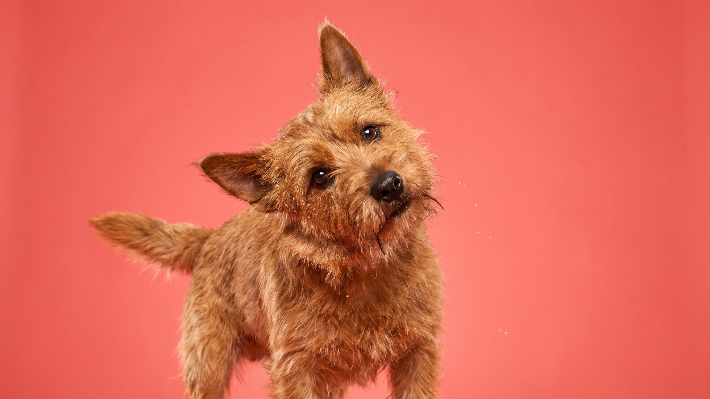

Хозяин ирландского терьера однажды описал его так: «Две скорости: стоп и взрыв». Эта порода действительно живёт на пружинах: рыжий, жёсткошёрстный, с характером бойца и преданностью лабрадора. Прежде чем завести такую собаку, стоит понять, что она требует от владельца каждый день.
🐾 У вас ирландский терьер?
AnimaLife соберёт уход под породу: к каким болезням есть склонность, что проверять по возрасту, чем кормить и когда пора к врачу. Бесплатно, прямо в мессенджере.
Собрать план ухода → Собрать в MAX →
У вас iPhone? AnimaLife есть в App Store
Ирландский терьер сложился как рабочая порода Ирландии: охотился на лис, охранял ферму, шёл рядом с хозяином на охоту. Это объясняет двойственность характера. С семьёй и детьми: мягкий, терпеливый, игривый. С чужими собаками: моментально настороженный, легко заводится на конфликт.
Порода плохо подходит тем, кто планирует держать несколько собак одновременно или регулярно бывать на людных площадках без контроля. При хорошей социализации с щенячьего возраста конфликтность снижается, но инстинкт никуда не уходит.
Минимум для нормального состояния психики: 2 полноценные прогулки в день суммарно не меньше 1,5 часа, плюс работа головой. Без умственной нагрузки терьер начинает придумывать себе занятия: разбирает обувь, копает диван, атакует всё, что движется.
Жёсткая шерсть ирландского терьера почти не линяет на мебель, что плюс для квартиры. Но требует тримминга: мёртвый волос не выпадает сам, его надо выщипывать вручную. Машинкой стричь нельзя: шерсть становится мягкой, теряет структуру и цвет.
Ирландский терьер хорошо подходит активным людям без маленьких животных в доме (кошки и грызуны попадают под охотничий инстинкт), готовым уделять прогулкам время каждый день. Порода хорошо контактирует с детьми школьного возраста, с малышами требует контроля из-за высокой энергии.
Для новичка порода сложная: упрямство терьера требует уверенного, последовательного хозяина. Мягкий или непоследовательный владелец быстро получает собаку, которая командует им, а не наоборот.
🐾 Ваш питомец — ирландский терьер?
Заведите профиль в AnimaLife: приложение запомнит породу, возраст и вес и будет подсказывать по уходу именно для неё. Вопросы AI-ветеринару — круглосуточно и бесплатно.
Завести профиль → Завести в MAX →
У вас iPhone? AnimaLife есть в App Store
🐾 Понравился разбор?
Подпишитесь на канал — каждый день разбираем по одному тревожному симптому у кошек и собак: что в пределах нормы, а когда пора к врачу. Подпишитесь, чтобы не пропустить разбор, который может спасти здоровье вашего питомца.
Материал носит информационный характер и не заменяет очную консультацию ветеринара.